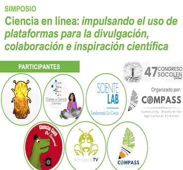

Eventos
Los miembros de COMPASS están trabajando en promover la ciencia en Colombia y hemos sido invitados por varias Universidades y asociaciones que promueven la ciencia y tecnología para realizar seminarios y organizar eventos científicos:





TECNOLOGICO DE ANTIOQUIA
Seminario: Ciencia E Investigación Para La Innovación En Agricultura
POLITÉCNICO JAIME ISAZA CADAVID
Seminario: Estrategias De Detección Temprana Y Manejo De La Marchitez

UNIVERSIDAD SIMÓN BOLÍVAR